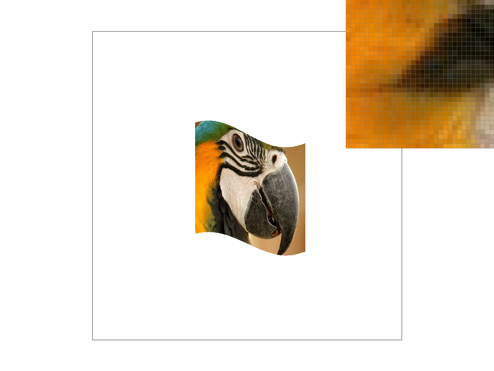

CS184/284A Spring 2025 Homework 1 Write-Up
Names: Julia Isaac and Richard Yang
Link to webpage: https://ryang3881.github.io/cs184/hw1
Link to GitHub repository: https://github.com/cal-cs184-student/sp25-hw1-jewelz
Overview
In this homework, we began by implementing a basic rasterizer by drawing triangles, and then progressively added more improvements and features. We implemented supersampling to mitigate antialiasing, support for basic transformations like rotating, scaling, and translating, and using barycentric coordinates for smooth shading. We then implemented support for texture sampling and then level sampling with mipmaps to reduce aliasing.Task 1: Drawing Single-Color Triangles
The way we rasterize triangles is as follows: Conceptually, the three points of a triangle form three half-planes, and the part we want to rasterize is the intersection of all three half-planes. We define a line function that, given a pair of points (P0, P1) and a third point (P), tells you what side of the half-plane formed by the pair of points the third point is on (or if it’s on the half-plane). This is done by defining vector V (as P - P0) and computing the dot product with the normal vector N (orthogonal to P1 - P0). We then compute a bounding box using minimum and maximum values of each point coordinates in x and y to “bound” the triangle in the smallest possible rectangle that encapsulates the triangle. For the basic implementation without supersampling we simply check the middle of each pixel in the bounding box with each edge of the triangle using the line function to determine what side(s) the middle of the pixel is on relative to each edge. Thus, the algorithm effectively checks each point that could be within the triangle in the minimal size rectangle, so it is never worse than checking every sample within the bounding box. If we find that the point is on the same side of all three edges, we fill in the pixel. This ensures that filling in works properly regardless of the winding order of vertices, because what specific direction counts as “inside” or “outside” of the edge can vary.Task 2: Antialiasing by Supersampling
Rasterization with supersampling still works conceptually similarly to task 1, but it adds sample_rate as a factor. The main change was adding iterating over sqrt(sample_rate) in x and y to sample more points for more detail within each pixel. To support these increased samples, we must also account for more supersample buffer memory, which we just accomplish by multiplying the existing by sample_rate. The last change is in resolve_to_framebuffer, we fill the target framebuffer pixels with supersample buffer data by averaging each of r, g, and b color channels for all sample data.Test 4
|
|
|
|
|
|
Task 3: Transforms
We wanted to do a side profile of cubeman running. There were lots of modifications required, including adding the rotating transform and translating the limbs appropriately. The main design choice we made here was to push the arms into the torso more and lessen gaps in the joints to make the arms shorter relative to the legs and make the figure look more proportional while running. Similarly, the gaps between the thighs and calves in the legs were widened to make the legs longer.
Task 4: Barycentric coordinates
Barycentric coordinates allow us to linearly interpolate between values (in this case colors) across a triangle.Task 5: "Pixel sampling" for texture mapping
Pixel sampling allows us to determine the color of a pixel by looking up its corresponding texture value. Since textures are essentially 2D images mapped onto 3D surfaces, we often need to sample colors at non-integer u,v coordinates. I implemented this by finding u and v as a three way linear interpolation between alpha, beta, and gamma parameters given a 3 pairs of u,v for each triangle vertex. I implemented both nearest neighbor and bilinear filtering to control how colors are retrieved. In nearest neighbor, I find the closest texel to the given u,v coordinates and directly uses its color. I implement this by rounding the derived u,v coordinates to the nearest integer texel index (scaling up to the image dimensions). In bilinear filtering, we perform linear interpolation between the four nearest texels to the sampled u,v coordinate. I implemented this first by computing fractional u,v values, fetching the four closest texels, and blending their colors given the formula in the lecture slides.|
|

|
|
|
|
Task 6: "Level Sampling" with mipmaps for texture mapping
Level sampling allows us to determine the best mipmap level for a given pixel (where a mipmap is a texture pyramid where lower levels contain smaller, low-res copies of an image).
Here’s my implementation:
- Calculating the u,v differences between the current sample point and moving one unit in x (dx) and moving one unit in y (dy).
- Scaling these differences by the texture resolution (width & height).
- Use formula from slides and take the maximum of these two values to get L.
- Computing the final mipmap level as = log2(L).
I have a switch “if” statement to handle the 3 level sampling methods.
When lsm == L_ZERO, I use part 5 to sample from 0th mipmap level.
When lsm == L_NEAREST, I round the computed mipmap level.
When lsm == L_LINEAR, I treat mipmap level as a continuous number
and compute a weighted sum of using one sample from each of the adjacent mipmap levels.
The tradeoffs between sampling techniques:
-
Pixel Sampling
- Nearest is fast but low quality, bilinear is a good balance, and trilinear is higher quality but more expensive.
-
Level Sampling
- Nearest is faster but can cause aliasing, linear is much smoother but requires more memory.
-
Number of Samples Per Pixel
- More samples reduces aliasing but slow down rendering and increase memory usage.
|
|
|
|
|
|